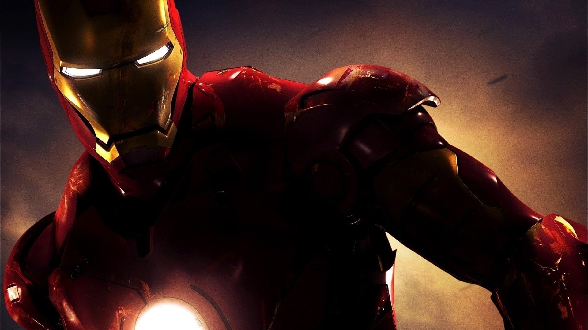
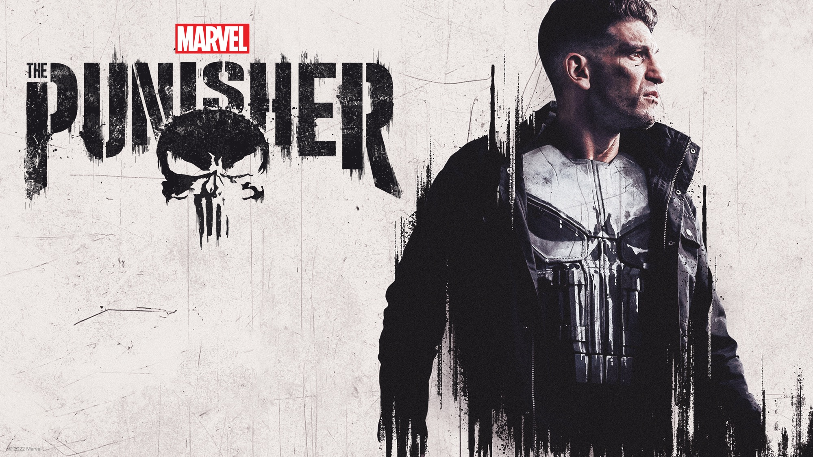
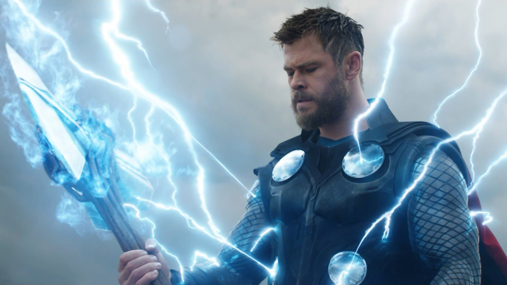
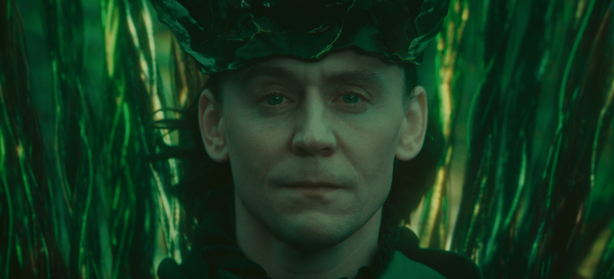
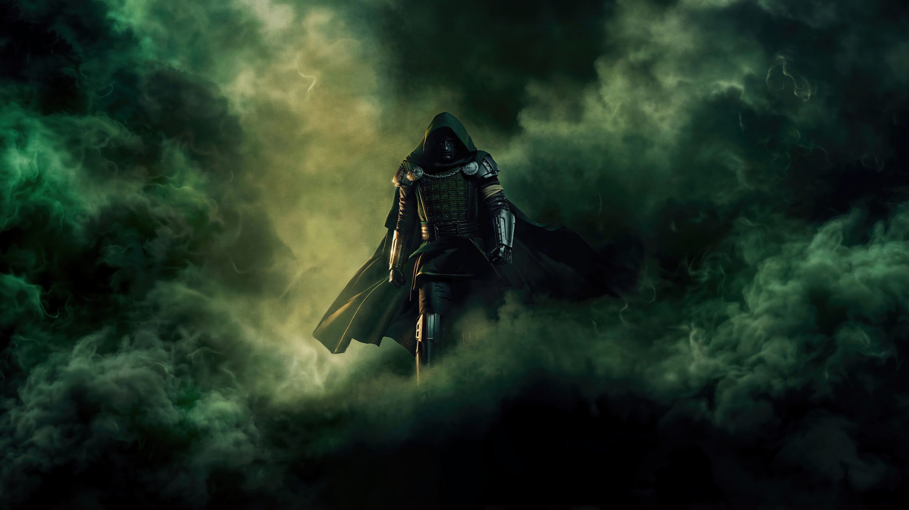

Practica de HTML
Marvel nació en 1939 bajo el nombre de Timely Publications, fundada por Martin Goodman. Años después, la compañía se convirtió en Marvel Comics y comenzó a desarrollar algunos de sus personajes más famosos. Entre sus principales creadores destacan Stan Lee, Jack Kirby y Steve Ditko, quienes dieron vida a personajes como Spider-Man, los Cuatro Fantásticos, Hulk, Iron Man y muchos otros.
Personajes favoritos
Presiona un nombre para obtener información
Spiderman
Presiona la imagen para conocer mas

Spider-Man es uno de los superhéroes más populares y reconocidos de Marvel. Su identidad es Peter Parker, un joven estudiante que obtiene poderes especiales después de ser mordido por una araña que había sido alterada científicamente. A partir de ese momento, Peter descubre que tiene habilidades como una gran fuerza, agilidad, reflejos sobrehumanos, la capacidad de trepar paredes y un sentido arácnido que le permite detectar el peligro. Además, utiliza unos dispositivos creados por él mismo para lanzar telarañas y desplazarse por la ciudad. Después de experimentar una gran pérdida personal, Peter comprende que sus poderes también implican una responsabilidad y decide utilizarlos para proteger a las personas y combatir el crimen. A pesar de ser un héroe, Spider-Man también enfrenta problemas cotidianos como los estudios, el trabajo, las relaciones y las dificultades de ser una persona común mientras lleva una vida como superhéroe.
Daredevil
Presiona la imagen para conocer mas

Daredevil es uno de los héroes más reconocidos de Marvel y su identidad es Matt Murdock, un abogado que vive en Hell's Kitchen, Nueva York. Cuando era niño, Matt sufrió un accidente con una sustancia química que lo dejó ciego, pero al mismo tiempo desarrolló sus otros sentidos de una manera extraordinaria. Gracias a su oído, olfato, tacto y sentido del equilibrio, puede percibir su entorno con una precisión sorprendente. Durante el día, utiliza sus conocimientos como abogado para defender a las personas que lo necesitan, mientras que por las noches se convierte en Daredevil, un vigilante que combate el crimen y se enfrenta a peligrosos criminales. Aunque no posee superpoderes tradicionales como otros héroes, destaca por su entrenamiento físico, sus habilidades de combate, su inteligencia y su determinación. Su historia representa la lucha entre la justicia, la moral y las dificultades personales que debe enfrentar mientras intenta proteger su ciudad.
Ironman
Presiona la imagen para conocer mas

Iron Man es uno de los personajes más importantes de Marvel y su verdadera identidad es Tony Stark, un millonario, inventor y empresario con una gran inteligencia. Después de ser capturado por un grupo de terroristas, Tony construye una armadura para escapar y sobrevivir, descubriendo que puede utilizar la tecnología para convertirse en un superhéroe. Con el paso del tiempo, desarrolla diferentes versiones de su traje, cada una con nuevas armas, sistemas de vuelo y tecnologías avanzadas. A diferencia de muchos otros héroes, Tony no posee poderes sobrenaturales, sino que depende de su inteligencia, creatividad y capacidad para crear tecnología. Aunque al principio es una persona arrogante y despreocupada, sus experiencias como Iron Man hacen que madure y comprenda la responsabilidad que tiene al utilizar sus habilidades. Finalmente, se convierte en uno de los miembros más importantes de los Vengadores y en una figura fundamental dentro del universo de Marvel.
Punisher
Presiona la imagen para conocer mas

The Punisher, cuyo nombre real es Frank Castle, es un personaje de Marvel conocido por su lucha implacable contra el crimen. Frank era un militar altamente entrenado cuya vida cambió después de que su familia fuera asesinada durante un ataque. A partir de ese momento, decide dedicar su vida a perseguir y castigar a criminales y organizaciones que considera responsables de actos violentos. A diferencia de muchos superhéroes, The Punisher no posee poderes sobrenaturales y tampoco sigue la misma idea de justicia que personajes como Spider-Man o Daredevil. Utiliza su experiencia militar, sus habilidades de combate, su inteligencia y diferentes armas para enfrentarse a sus enemigos. Su personaje representa una visión mucho más oscura y extrema de la justicia, lo que constantemente genera conflictos con otros héroes de Marvel. A pesar de su personalidad fría y violenta, Frank Castle está motivado principalmente por el deseo de proteger a personas inocentes y evitar que otras familias sufran una tragedia como la que él vivió.
Thor
Presiona la imagen para conocer mas

Thor es uno de los personajes más poderosos y reconocidos de Marvel, inspirado en el dios del trueno de la mitología nórdica. Su identidad es Thor Odinson, hijo de Odín y príncipe del reino de Asgard. Posee una fuerza sobrehumana, gran resistencia y la capacidad de controlar el poder del trueno y los relámpagos. Su arma más característica es Mjolnir, un poderoso martillo que solamente puede ser levantado por aquellos que considera dignos. Al principio, Thor es orgulloso, impulsivo y demasiado confiado en sus habilidades, pero después de ser enviado a la Tierra por su padre, comienza a comprender el verdadero significado de ser un líder y un héroe. Con el tiempo, se convierte en un importante miembro de los Vengadores y lucha para proteger tanto a la Tierra como a Asgard de diferentes amenazas. Su historia está marcada por la responsabilidad, el sacrificio y su relación con su familia, especialmente con su hermano Loki.
Loki
Presiona la imagen para conocer mas

Loki es uno de los personajes más complejos y populares de Marvel, conocido principalmente por ser el hermano adoptivo de Thor y uno de los grandes antagonistas de los Vengadores. Su verdadero origen está relacionado con los Gigantes de Hielo de Jotunheim, aunque fue criado en Asgard por Odín como parte de la familia real. Loki posee una gran inteligencia y habilidades mágicas que le permiten crear ilusiones, cambiar de apariencia y manipular diferentes situaciones para conseguir sus objetivos. A diferencia de Thor, Loki suele utilizar la astucia y la estrategia en lugar de la fuerza física para enfrentarse a sus enemigos. Su deseo de obtener reconocimiento y demostrar su valor lo lleva a entrar constantemente en conflicto con su hermano. Sin embargo, Loki no es simplemente un villano, ya que a lo largo de sus historias demuestra tener diferentes facetas y momentos en los que busca cambiar sus decisiones y encontrar su propio camino. Por esta razón, se ha convertido en uno de los personajes más interesantes del universo de Marvel.
Doctor Doom
Presiona la imagen para conocer mas

Doctor Doom, cuyo verdadero nombre es Victor Von Doom, es uno de los villanos más importantes y poderosos del universo Marvel, conocido principalmente por ser el gobernante de Latveria y uno de los grandes enemigos de los Cuatro Fantásticos. Desde joven demostró tener una inteligencia extraordinaria y un gran interés por la ciencia y la tecnología, desarrollando diferentes inventos y dispositivos que le permitieron aumentar su poder. Además de sus conocimientos científicos, Doom también estudió magia y llegó a convertirse en un poderoso hechicero, combinando ambas disciplinas para alcanzar sus objetivos. Su característica armadura le proporciona una gran fuerza, resistencia y diferentes habilidades que lo convierten en un enemigo muy peligroso. A diferencia de otros villanos, Doctor Doom considera que sus acciones están justificadas porque cree que es la persona más capaz para gobernar y proteger a los demás. Su orgullo, ambición y deseo de demostrar su superioridad lo llevan constantemente a enfrentarse con héroes como Reed Richards y los Cuatro Fantásticos. Sin embargo, Doom es un personaje mucho más complejo que un simple villano, ya que en diferentes historias también ha demostrado tener motivaciones, principios y momentos en los que sus acciones pueden beneficiar a otras personas. Por estas características, se ha convertido en uno de los personajes más reconocibles e interesantes de Marvel.